官网安装地址：www.python.org/download
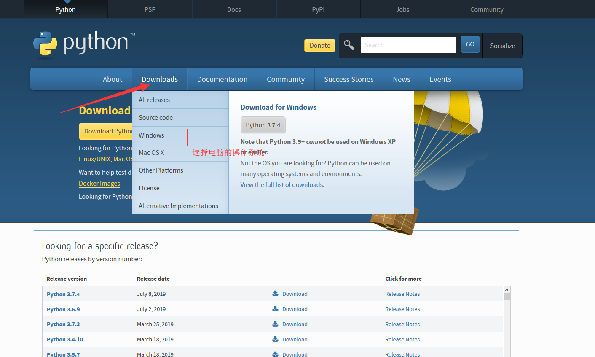
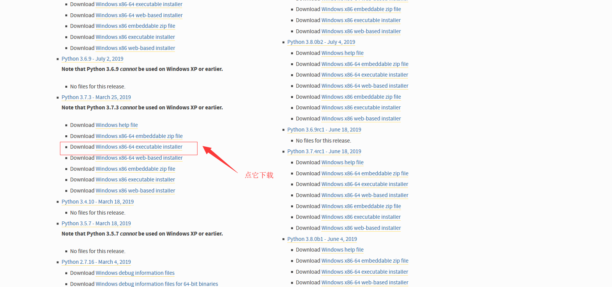
（1）双击下载的Python解释器打开
（2）勾选Add python 3.6 to PATA (搭建集群构建环境)，并点击 Customize Installation
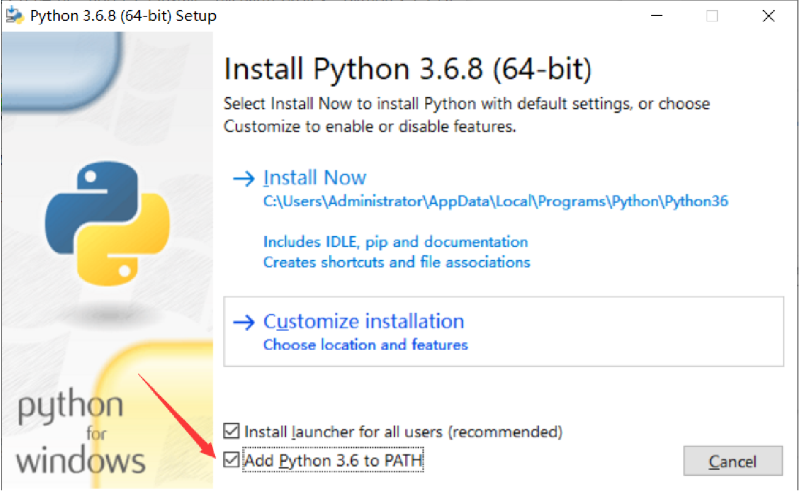
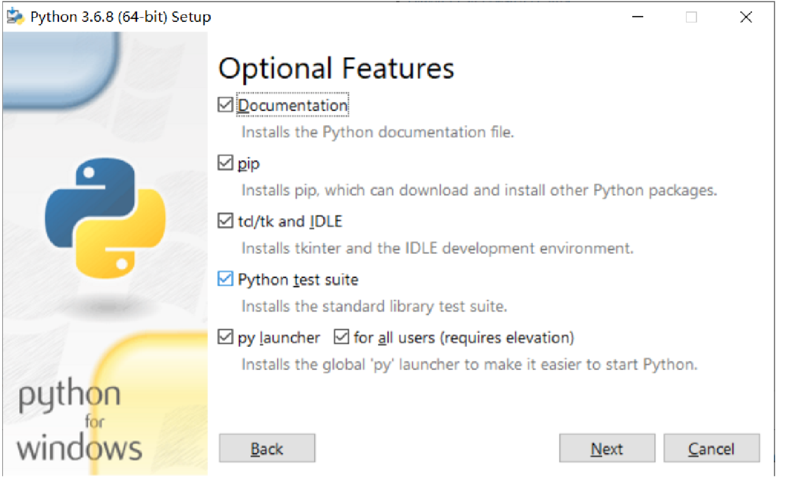
（3）勾选Install for all userss，在Browse里自定义选择要安装的路 径，最后点击右下角的Install
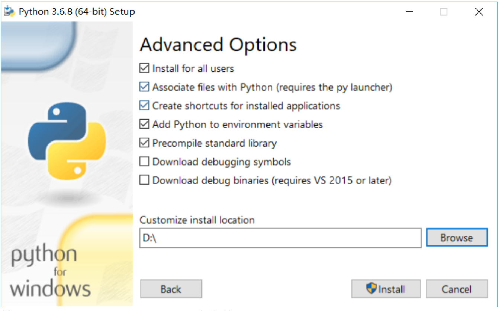
（4）等待进度条读完，提示下一页面表示安装完成
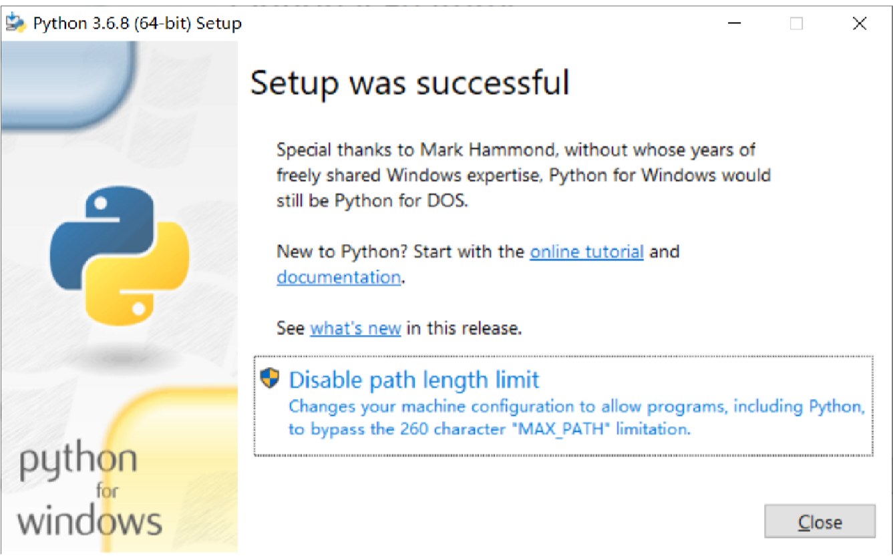
2、安装完成后，使用命令提示窗查看。借助CMD来验证上边的操作是否都正常进行了，打开CMD， Windows键 + R键，输入cmd：在CMD里输入python，正确的提示如下图所示：
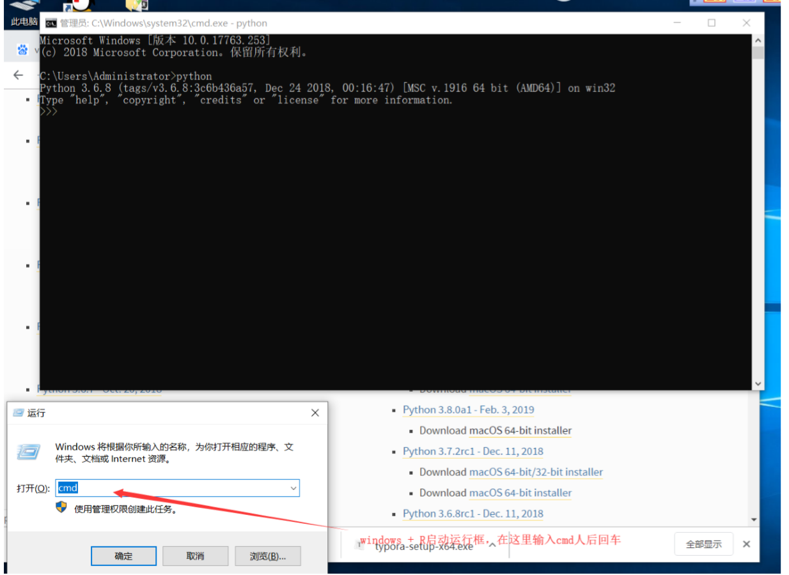
3、当提示信息与上图不符，且与下图相符，则意味着我们在安装环节设置的环境变量失败 了，错误提示如下图：
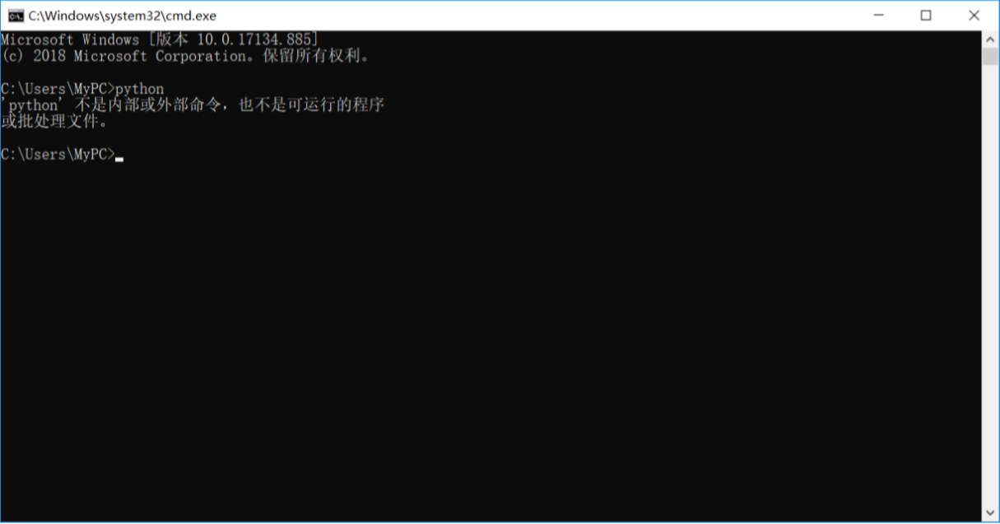
当遇到这种情况，我们可以输入python.exe的全路径也可以实现
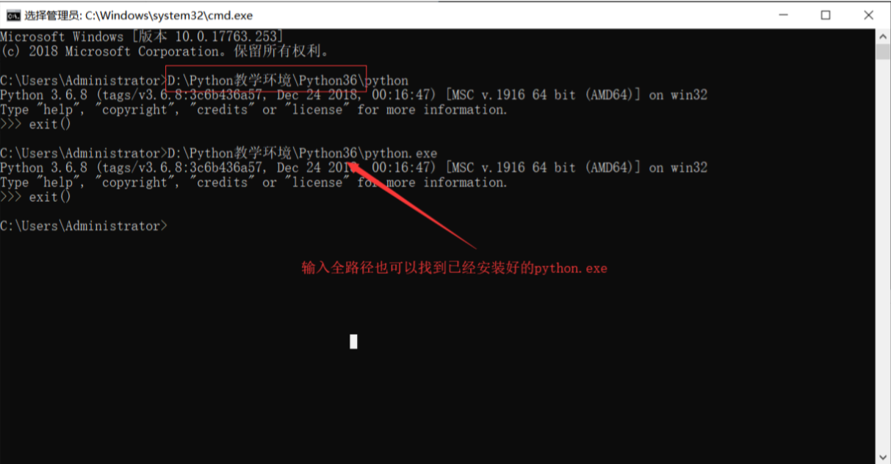
这种情况下每次找到python就得输入全路径，这样复杂的操作可以通过设置环境变量来 进行简化，环境变量的设置如下所示：
桌面我的电脑→属性→高级系统设置→环境变量，选中系统变量里的PATH，并点击编辑
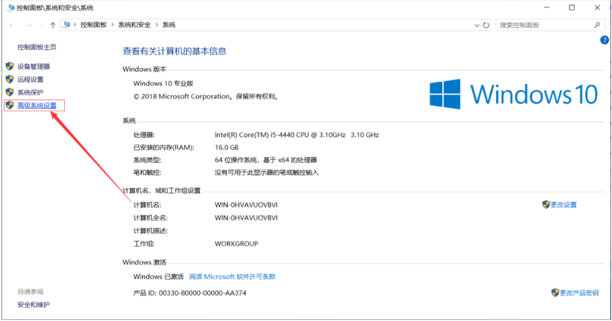
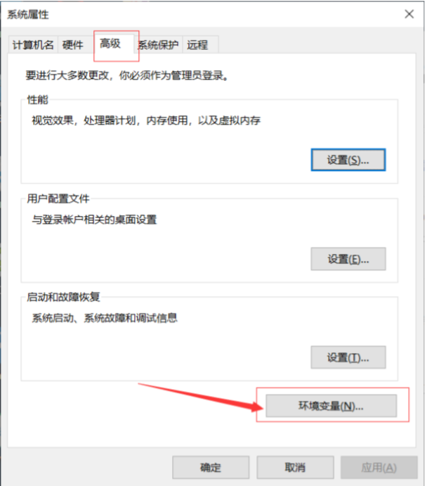
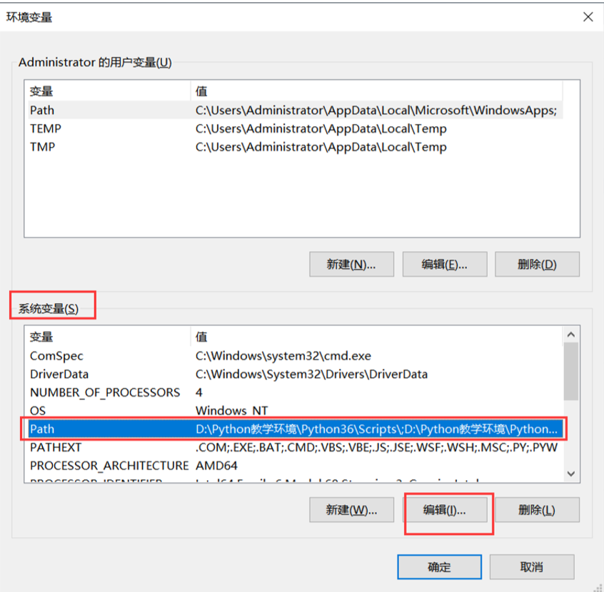
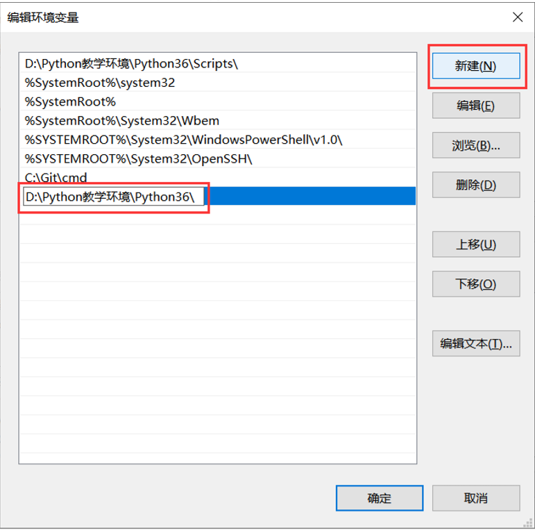
设置完成点确定，再回到CMD里输入python就可以找到了
4、下载注意
(1) win10以下操作系统建议下载3.5.2版本之前的Python
(2)win10操作系统建议下载3.6.8版本的Python
(3)选择版本后还需注意自己操作系统的位数，建议下载与操作系统位数匹配的版本
(4)选择合适的版本后下载后缀为[executable installer]的文件